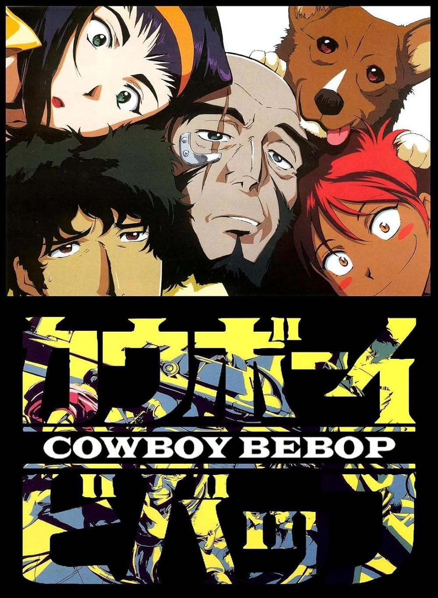
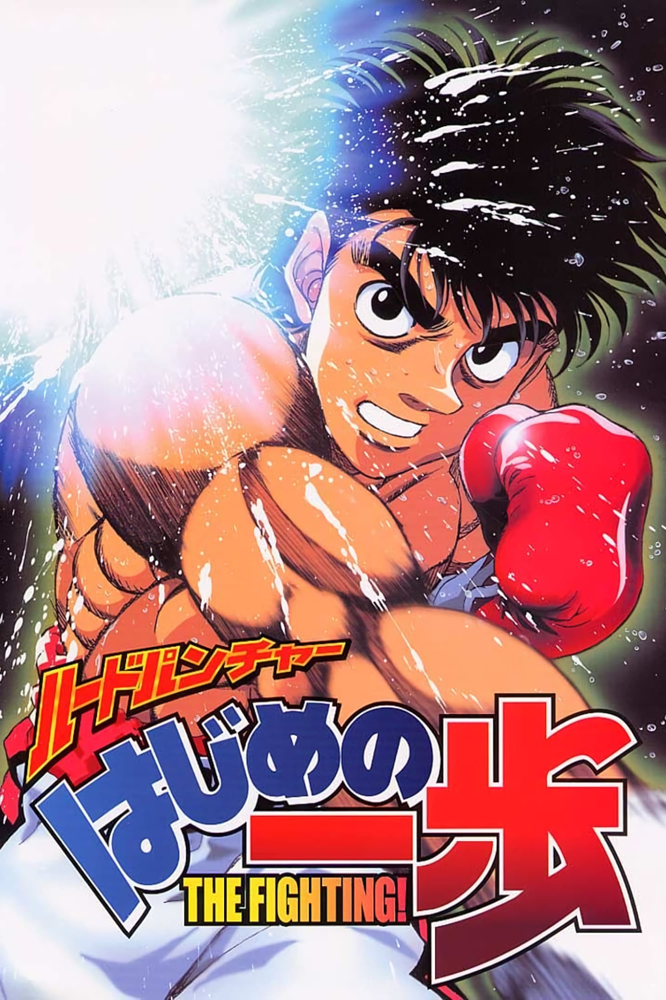
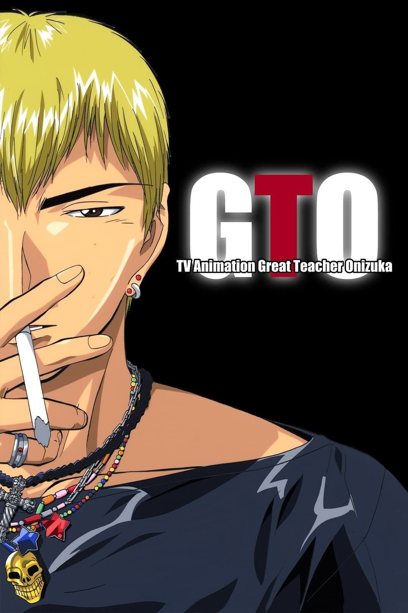

FilmReel Top 10 Anime
THIS IS JUST MY RECOMMENDATION
Top 10 Anime
THIS IS JUST MY RECOMMENDATION
#1
Fullmetal Alchemist | 9.1
Creator: Hiromu Arakawa
68 Episodes | Adventure
Fullmetal Alchemist follows brothers Edward and Alphonse Elric, who use alchemy in a failed attempt to revive their mother, costing Edward an arm and a leg and trapping Alphonse’s soul in a suit of armor. Seeking the Philosopher’s Stone to restore their bodies, they uncover dark secrets about alchemy, war, and humanity. With deep storytelling, emotional weight, and intense action, this anime is a masterpiece of the genre.

#2
Cowboy Bebop | 8.9
Stars: Kôichi Yamadera
26 Episodes | Adult Animation
Cowboy Bebop follows a group of bounty hunters—Spike Spiegel, Jet Black, Faye Valentine, Edward, and Ein—as they chase criminals across the galaxy aboard the spaceship Bebop. Blending jazz-inspired style, noir storytelling, and deep existential themes, this sci-fi classic delivers a mix of action, humor, and melancholy. With stunning animation and an unforgettable soundtrack, it remains one of the most iconic anime of all time.

#3
Fighting Spirit | 8.8
Creator: George Morikawa
76 Episodes | Boxing
Fighting Spirit (Hajime no Ippo) follows Ippo Makunouchi, a shy high school student who discovers his talent for boxing after being saved from bullies by a professional fighter. As he trains to become a champion, Ippo faces intense battles, personal growth, and the hardships of the sport. With thrilling fights, deep character development, and inspiring perseverance, this anime is a must-watch for sports fans.

#4
Mushi-Shi | 8.5
Creator: Yuki Urushibara
27 Episodes | Supernatural Fantasy
Mushi-Shi follows Ginko, a wandering Mushi Master who studies mysterious life forms called Mushi—ethereal beings that exist beyond human perception and influence the world in strange ways. Traveling from village to village, he helps people affected by Mushi while uncovering their secrets. With a serene atmosphere, breathtaking visuals, and philosophical storytelling, this anime offers a meditative and immersive experience like no other.

#5
Monster | 8.7
Creator: Naoki Urasawa
75 Episodes | Psychological Thriller
Monster follows Dr. Kenzo Tenma, a brilliant neurosurgeon who saves the life of a young boy instead of an influential politician—only to discover years later that the boy has grown into a ruthless serial killer. Haunted by guilt, Tenma sets out on a relentless journey to stop the monster he helped create. With intense psychological depth, moral dilemmas, and a gripping thriller narrative, this anime is a masterpiece of suspense.
#6
Attack on Titan | 9.1
Creator: Hajime Isayama
98 Episodes | Adult Animation
Attack on Titan follows Eren Yeager and his friends Mikasa and Armin as they join the military to fight against the terrifying Titans—giant humanoid creatures that have driven humanity to the brink of extinction. As they uncover dark secrets about the Titans and their own world, Eren’s quest for vengeance turns into a battle for survival and truth. With intense action, deep storytelling, and shocking twists, this anime is a modern masterpiece of the genre.

#7
Hunter x Hunter | 9.0
Creator: Yoshihiro Togashi
148 Episodes | Adventure
Hunter x Hunter follows Gon Freecss, a young boy who sets out to become a Hunter—an elite adventurer with special privileges—in hopes of finding his long-lost father. Along the way, he befriends Killua, Leorio, and Kurapika, facing dangerous trials, powerful enemies, and moral dilemmas. With deep world-building, strategic battles, and emotional depth, this anime is a standout in the shonen genre.

#8
Great Teacher Onizuka | 8.5
Creator: Tooru Fujisawa
43 Episodes | Anime
Great Teacher Onizuka follows Eikichi Onizuka, a former delinquent and biker gang leader who becomes a high school teacher with an unconventional approach to education. Using street smarts, humor, and unorthodox methods, he helps troubled students overcome their struggles while challenging the corrupt school system. With a mix of comedy, drama, and life lessons, this anime is both hilarious and inspiring.

#9

Steins;Gate | 8.8
Creator: Naotaka Hayashi
26 Episodes | Time Travel
Steins;Gate follows Rintarou Okabe, a self-proclaimed mad scientist who accidentally discovers time travel through a modified microwave. As he and his friends experiment with altering the past, they attract the attention of dangerous organizations, leading to unforeseen consequences. Blending mind-bending science fiction, emotional depth, and gripping suspense, this anime is a masterpiece of time-travel storytelling.
#10
Samurai Champloo | 8.5
Creator: Shin'ichirô Watanabe
26 Episodes | Adult Animation
Samurai Champloo follows Mugen, a wild rogue, and Jin, a disciplined samurai, who are forced to travel together after crossing paths with a waitress named Fuu. On a quest to find a mysterious "samurai who smells of sunflowers," they face fierce battles, eccentric enemies, and unexpected adventures. Blending samurai action with hip-hop style and stunning animation, this anime delivers a unique and unforgettable experience.